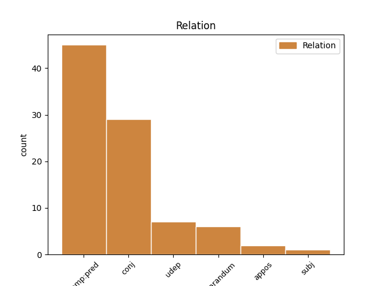
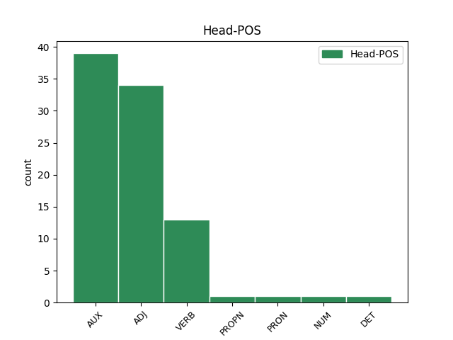
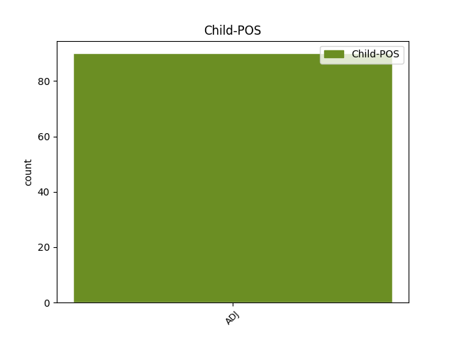

Distribution of features within this leaf



Agreement Rules sorted by frequency.
- When the dependent token is the predicative complements(comp:pred) of the head token, and the head token is AUX and the dependent token is ADJ.
1 no _ _ _ _ 0 _ _ _
2 poglejte _ _ _ _ 0 _ _ _
3 eee _ _ _ _ 0 _ _ _
4 ni _ _ _ _ 0 _ _ _
5 možno _ _ _ _ 0 _ _ _
6 na _ _ _ _ 0 _ _ _
7 vse _ _ _ _ 0 _ _ _
8 odgovarjati _ _ _ _ 0 _ _ _
9 ker _ _ _ _ 0 _ _ _
10 je _ _ _ _ 0 _ _ _
11 bilo biti AUX Va-p-sn Gender=Neut|Number=Sing|VerbForm=Part 0 _ _ _
12 izrečeno izrečen ADJ Appnsn Case=Nom|Degree=Pos|Gender=Neut|Number=Sing|VerbForm=Part 11 comp:pred _ msd=Pdnsei|word=izrečeno
13 veliko _ _ _ _ 0 _ _ _
14 stvari _ _ _ _ 0 _ _ _
15 ki _ _ _ _ 0 _ _ _
16 eee _ _ _ _ 0 _ _ _
17 ne _ _ _ _ 0 _ _ _
18 držijo _ _ _ _ 0 _ _ _
19 eee _ _ _ _ 0 _ _ _
20 jaz _ _ _ _ 0 _ _ _
21 sem _ _ _ _ 0 _ _ _
22 videl _ _ _ _ 0 _ _ _
23 oziroma _ _ _ _ 0 _ _ _
24 vidim _ _ _ _ 0 _ _ _
25 veliko _ _ _ _ 0 _ _ _
26 šaljivcev _ _ _ _ 0 _ _ _
27 tukaj _ _ _ _ 0 _ _ _
28 med _ _ _ _ 0 _ _ _
29 nami _ _ _ _ 0 _ _ _
1 eee _ _ _ _ 0 _ _ _
2 še _ _ _ _ 0 _ _ _
3 mi _ _ _ _ 0 _ _ _
4 sem _ _ _ _ 0 _ _ _
5 na _ _ _ _ 0 _ _ _
6 trenutke _ _ _ _ 0 _ _ _
7 zelo _ _ _ _ 0 _ _ _
8 občutljiva _ _ _ _ 0 _ _ _
9 na _ _ _ _ 0 _ _ _
10 mrzlo mrzel ADJ Agpnsa Case=Acc|Degree=Pos|Gender=Neut|Number=Sing 0 _ _ _
11 eee _ _ _ _ 0 _ _ _
12 pa _ _ _ _ 0 _ _ _
13 toplo topel ADJ Agpnsa Case=Acc|Degree=Pos|Gender=Neut|Number=Sing 10 conj _ msd=Ppnset|word=toplo
1 kako _ _ _ _ 0 _ _ _
2 bi _ _ _ _ 0 _ _ _
3 sami sam ADJ Agpmpn Case=Nom|Degree=Pos|Gender=Masc|Number=Plur 5 udep _ msd=Ppnmmi|word=sami
4 sebe _ _ _ _ 0 _ _ _
5 opisali opisati VERB Vmep-pm Aspect=Perf|Gender=Masc|Number=Plur|VerbForm=Part 0 _ _ _
6 ? _ _ _ _ 0 _ _ _
1 tveganja _ _ _ _ 0 _ _ _
2 so _ _ _ _ 0 _ _ _
3 postala postati VERB Vmep-pn Aspect=Perf|Gender=Neut|Number=Plur|VerbForm=Part 0 _ _ _
4 večja velik ADJ Agcnpn Case=Nom|Degree=Cmp|Gender=Neut|Number=Plur 3 comp:pred _ msd=Pppsmi|word=večja
1 ali _ _ _ _ 0 _ _ _
2 kaj _ _ _ _ 0 _ _ _
3 je _ _ _ _ 0 _ _ _
4 kaj _ _ _ _ 0 _ _ _
5 je _ _ _ _ 0 _ _ _
6 pri _ _ _ _ 0 _ _ _
7 koaliciji _ _ _ _ 0 _ _ _
8 slovenija _ _ _ _ 0 _ _ _
9 podobno podoben ADJ Agpnsn Case=Nom|Degree=Pos|Gender=Neut|Number=Sing 10 reparandum _ msd=Ppnsei|word=podobno
10 podobno podoben ADJ Agpnsn Case=Nom|Degree=Pos|Gender=Neut|Number=Sing 0 _ _ _
11 [incident] _ _ _ _ 0 _ _ _
12 čki _ _ _ _ 0 _ _ _
13 jaz _ _ _ _ 0 _ _ _
14 ne _ _ _ _ 0 _ _ _
15 razumem _ _ _ _ 0 _ _ _
16 glej _ _ _ _ 0 _ _ _
17 to _ _ _ _ 0 _ _ _
18 je _ _ _ _ 0 _ _ _
19 kao _ _ _ _ 0 _ _ _
20 to _ _ _ _ 0 _ _ _
21 je _ _ _ _ 0 _ _ _
22 najbolj _ _ _ _ 0 _ _ _
23 odmevna _ _ _ _ 0 _ _ _
24 satirična _ _ _ _ 0 _ _ _
25 izjava _ _ _ _ 0 _ _ _
26 eee _ _ _ _ 0 _ _ _
27 eee _ _ _ _ 0 _ _ _
28 in _ _ _ _ 0 _ _ _
29 jaz _ _ _ _ 0 _ _ _
30 sploh _ _ _ _ 0 _ _ _
31 ne _ _ _ _ 0 _ _ _
32 razumem _ _ _ _ 0 _ _ _
33 zakaj _ _ _ _ 0 _ _ _
34 koalicija _ _ _ _ 0 _ _ _
35 slovenija _ _ _ _ 0 _ _ _
36 s _ _ _ _ 0 _ _ _
37 [incident] _ _ _ _ 0 _ _ _
38 čko _ _ _ _ 0 _ _ _
39 … _ _ _ _ 0 _ _ _
40 ja _ _ _ _ 0 _ _ _
1 t _ _ _ _ 0 _ _ _
2 [gap] _ _ _ _ 0 _ _ _
3 tudi _ _ _ _ 0 _ _ _
4 mogoče mogoč ADJ Agpnsn Case=Nom|Degree=Pos|Gender=Neut|Number=Sing 8 reparandum _ msd=Ppnsei|word=mogoč
5 tudi _ _ _ _ 0 _ _ _
6 mogoče _ _ _ _ 0 _ _ _
7 zaradi _ _ _ _ 0 _ _ _
8 tega ta DET Pd-nsg Case=Gen|Gender=Neut|Number=Sing|PronType=Dem 0 _ _ _
9 če _ _ _ _ 0 _ _ _
10 bosta _ _ _ _ 0 _ _ _
11 res _ _ _ _ 0 _ _ _
12 šla _ _ _ _ 0 _ _ _
13 vidva _ _ _ _ 0 _ _ _
14 v _ _ _ _ 0 _ _ _
15 dvoboj _ _ _ _ 0 _ _ _
16 da _ _ _ _ 0 _ _ _
17 imaš _ _ _ _ 0 _ _ _
18 pač _ _ _ _ 0 _ _ _
19 ti _ _ _ _ 0 _ _ _
20 prednost _ _ _ _ 0 _ _ _
21 da _ _ _ _ 0 _ _ _
22 lahko _ _ _ _ 0 _ _ _
23 ne _ _ _ _ 0 _ _ _
24 izbereš _ _ _ _ 0 _ _ _
25 način _ _ _ _ 0 _ _ _
26 dvoboja _ _ _ _ 0 _ _ _
27 ne _ _ _ _ 0 _ _ _
1 ker _ _ _ _ 0 _ _ _
2 vemo _ _ _ _ 0 _ _ _
3 da _ _ _ _ 0 _ _ _
4 smo _ _ _ _ 0 _ _ _
5 skoraj _ _ _ _ 0 _ _ _
6 vsi _ _ _ _ 0 _ _ _
7 no _ _ _ _ 0 _ _ _
8 pod _ _ _ _ 0 _ _ _
9 eee _ _ _ _ 0 _ _ _
10 pod _ _ _ _ 0 _ _ _
11 stresom _ _ _ _ 0 _ _ _
12 eni en NUM Mlpmpn Case=Nom|Gender=Masc|Number=Plur|NumForm=Word|NumType=Card 0 _ _ _
13 bolj _ _ _ _ 0 _ _ _
14 drugi drug ADJ Mlpmpn Case=Nom|Gender=Masc|Number=Plur 12 conj _ msd=Kbzmmi|word=drugi
15 manj _ _ _ _ 0 _ _ _
1 ja _ _ _ _ 0 _ _ _
2 kaj kaj PRON Pq-nsn Case=Nom|Gender=Neut|Number=Sing|PronType=Int 0 _ _ _
3 pa _ _ _ _ 0 _ _ _
4 ostalo ostal ADJ Appnsn Case=Nom|Degree=Pos|Gender=Neut|Number=Sing|VerbForm=Part 2 subj _ msd=Pdnsei|word=ostalo
5 ? _ _ _ _ 0 _ _ _
1 videli _ _ _ _ 0 _ _ _
2 smo _ _ _ _ 0 _ _ _
3 štiri _ _ _ _ 0 _ _ _
4 smučarke _ _ _ _ 0 _ _ _
5 peta _ _ _ _ 0 _ _ _
6 je _ _ _ _ 0 _ _ _
7 marion Marion PROPN Npfsn Case=Nom|Gender=Fem|Number=Sing 0 _ _ _
8 bertrand _ _ _ _ 0 _ _ _
9 zadnja zadnji ADJ Agpfsn Case=Nom|Degree=Pos|Gender=Fem|Number=Sing 7 appos _ msd=Ppnzei|word=zadnja
10 pred _ _ _ _ 0 _ _ _
11 matejo _ _ _ _ 0 _ _ _
12 robnik _ _ _ _ 0 _ _ _
1 te _ _ _ _ 0 _ _ _
2 proge _ _ _ _ 0 _ _ _
3 gor _ _ _ _ 0 _ _ _
4 recimo _ _ _ _ 0 _ _ _
5 eee _ _ _ _ 0 _ _ _
6 sedežnice _ _ _ _ 0 _ _ _
7 vlečnice _ _ _ _ 0 _ _ _
8 pa _ _ _ _ 0 _ _ _
9 to _ _ _ _ 0 _ _ _
10 vse _ _ _ _ 0 _ _ _
11 je _ _ _ _ 0 _ _ _
12 recimo _ _ _ _ 0 _ _ _
13 šest _ _ _ _ 0 _ _ _
14 petnajst _ _ _ _ 0 _ _ _
15 trinajst _ _ _ _ 0 _ _ _
16 in _ _ _ _ 0 _ _ _
17 ob _ _ _ _ 0 _ _ _
18 in _ _ _ _ 0 _ _ _
19 proga _ _ _ _ 0 _ _ _
20 je _ _ _ _ 0 _ _ _
21 recimo _ _ _ _ 0 _ _ _
22 rdeča rdeč ADJ Agpfsn Case=Nom|Degree=Pos|Gender=Fem|Number=Sing 23 comp:pred _ msd=Ppnzei|word=rdeča
23 narisana narisan ADJ Appfsn Case=Nom|Degree=Pos|Gender=Fem|Number=Sing|VerbForm=Part 0 _ _ _
24 pač _ _ _ _ 0 _ _ _
25 rdeča _ _ _ _ 0 _ _ _
26 srednje _ _ _ _ 0 _ _ _
27 težka _ _ _ _ 0 _ _ _
28 ali _ _ _ _ 0 _ _ _
29 pa _ _ _ _ 0 _ _ _
30 modra _ _ _ _ 0 _ _ _
31 pa _ _ _ _ 0 _ _ _
32 je _ _ _ _ 0 _ _ _
33 številka _ _ _ _ 0 _ _ _
34 sedem _ _ _ _ 0 _ _ _
35 ali _ _ _ _ 0 _ _ _
36 pa _ _ _ _ 0 _ _ _
37 ta _ _ _ _ 0 _ _ _
38 je _ _ _ _ 0 _ _ _
39 devet _ _ _ _ 0 _ _ _
40 ali _ _ _ _ 0 _ _ _
41 pa _ _ _ _ 0 _ _ _
42 ne _ _ _ _ 0 _ _ _
43 vem _ _ _ _ 0 _ _ _
44 koliko _ _ _ _ 0 _ _ _
1 te _ _ _ _ 0 _ _ _
2 proge _ _ _ _ 0 _ _ _
3 gor _ _ _ _ 0 _ _ _
4 recimo _ _ _ _ 0 _ _ _
5 eee _ _ _ _ 0 _ _ _
6 sedežnice _ _ _ _ 0 _ _ _
7 vlečnice _ _ _ _ 0 _ _ _
8 pa _ _ _ _ 0 _ _ _
9 to _ _ _ _ 0 _ _ _
10 vse _ _ _ _ 0 _ _ _
11 je _ _ _ _ 0 _ _ _
12 recimo _ _ _ _ 0 _ _ _
13 šest _ _ _ _ 0 _ _ _
14 petnajst _ _ _ _ 0 _ _ _
15 trinajst _ _ _ _ 0 _ _ _
16 in _ _ _ _ 0 _ _ _
17 ob _ _ _ _ 0 _ _ _
18 in _ _ _ _ 0 _ _ _
19 proga _ _ _ _ 0 _ _ _
20 je _ _ _ _ 0 _ _ _
21 recimo _ _ _ _ 0 _ _ _
22 rdeča _ _ _ _ 0 _ _ _
23 narisana _ _ _ _ 0 _ _ _
24 pač _ _ _ _ 0 _ _ _
25 rdeča rdeč ADJ Agpfsn Case=Nom|Degree=Pos|Gender=Fem|Number=Sing 0 _ _ _
26 srednje _ _ _ _ 0 _ _ _
27 težka težek ADJ Agpfsn Case=Nom|Degree=Pos|Gender=Fem|Number=Sing 25 appos _ msd=Ppnzei|word=težka
28 ali _ _ _ _ 0 _ _ _
29 pa _ _ _ _ 0 _ _ _
30 modra _ _ _ _ 0 _ _ _
31 pa _ _ _ _ 0 _ _ _
32 je _ _ _ _ 0 _ _ _
33 številka _ _ _ _ 0 _ _ _
34 sedem _ _ _ _ 0 _ _ _
35 ali _ _ _ _ 0 _ _ _
36 pa _ _ _ _ 0 _ _ _
37 ta _ _ _ _ 0 _ _ _
38 je _ _ _ _ 0 _ _ _
39 devet _ _ _ _ 0 _ _ _
40 ali _ _ _ _ 0 _ _ _
41 pa _ _ _ _ 0 _ _ _
42 ne _ _ _ _ 0 _ _ _
43 vem _ _ _ _ 0 _ _ _
44 koliko _ _ _ _ 0 _ _ _
Disagree Examples:
1 trenutni _ _ _ _ 0 _ _ _
2 slovensko slovenski ADJ Agpnsn Case=Nom|Degree=Pos|Gender=Neut|Number=Sing 0 _ _ _
3 ameriški ameriški ADJ Agpmpn Case=Nom|Degree=Pos|Gender=Masc|Number=Plur 2 conj _ msd=Ppnmmi|word=ameriški
4 odnosi _ _ _ _ 0 _ _ _
5 so _ _ _ _ 0 _ _ _
6 kakšni _ _ _ _ 0 _ _ _
7 in _ _ _ _ 0 _ _ _
8 kakšni _ _ _ _ 0 _ _ _
9 so _ _ _ _ 0 _ _ _
10 lahko _ _ _ _ 0 _ _ _
11 v _ _ _ _ 0 _ _ _
12 bodoče _ _ _ _ 0 _ _ _
13 če _ _ _ _ 0 _ _ _
14 bo _ _ _ _ 0 _ _ _
15 obama _ _ _ _ 0 _ _ _
16 in _ _ _ _ 0 _ _ _
17 bo _ _ _ _ 0 _ _ _
18 vladal _ _ _ _ 0 _ _ _
19 v _ _ _ _ 0 _ _ _
20 beli _ _ _ _ 0 _ _ _
21 hiši _ _ _ _ 0 _ _ _
22 ? _ _ _ _ 0 _ _ _
1 nobenega _ _ _ _ 0 _ _ _
2 hostla _ _ _ _ 0 _ _ _
3 nisva _ _ _ _ 0 _ _ _
4 imela imeti VERB Vmpp-dm Aspect=Imp|Gender=Masc|Number=Dual|VerbForm=Part 0 _ _ _
5 rezerviranega rezerviran ADJ Appnsg Case=Gen|Degree=Pos|Gender=Neut|Number=Sing|VerbForm=Part 4 comp:pred _ msd=Pdnser|word=rezerviranega
6 pač _ _ _ _ 0 _ _ _
7 ne _ _ _ _ 0 _ _ _
8 tako _ _ _ _ 0 _ _ _
9 tako _ _ _ _ 0 _ _ _
10 da _ _ _ _ 0 _ _ _
11 je _ _ _ _ 0 _ _ _
12 bilo _ _ _ _ 0 _ _ _
13 kar _ _ _ _ 0 _ _ _
14 kul _ _ _ _ 0 _ _ _
1 eee _ _ _ _ 0 _ _ _
2 sami sam ADJ Agpmpn Case=Nom|Degree=Pos|Gender=Masc|Number=Plur 0 _ _ _
3 same sam ADJ Agpfpn Case=Nom|Degree=Pos|Gender=Fem|Number=Plur 2 conj _ msd=Ppnzmi|word=same
1 eee _ _ _ _ 0 _ _ _
2 [gap] _ _ _ _ 0 _ _ _
3 konec _ _ _ _ 0 _ _ _
4 osemdesetih _ _ _ _ 0 _ _ _
5 let _ _ _ _ 0 _ _ _
6 je _ _ _ _ 0 _ _ _
7 bil _ _ _ _ 0 _ _ _
8 čas _ _ _ _ 0 _ _ _
9 ko _ _ _ _ 0 _ _ _
10 je _ _ _ _ 0 _ _ _
11 ko _ _ _ _ 0 _ _ _
12 je _ _ _ _ 0 _ _ _
13 postajal _ _ _ _ 0 _ _ _
14 tudi _ _ _ _ 0 _ _ _
15 v _ _ _ _ 0 _ _ _
16 slovenskem _ _ _ _ 0 _ _ _
17 prostoru _ _ _ _ 0 _ _ _
18 vse _ _ _ _ 0 _ _ _
19 bolj _ _ _ _ 0 _ _ _
20 zanimiv zanimiv ADJ Agpmsnn Case=Nom|Definite=Ind|Degree=Pos|Gender=Masc|Number=Sing 24 reparandum _ msd=Ppnmein|word=zanimiv
21 eee _ _ _ _ 0 _ _ _
22 vse _ _ _ _ 0 _ _ _
23 bolj _ _ _ _ 0 _ _ _
24 zanimiva zanimiv ADJ Agpfsn Case=Nom|Degree=Pos|Gender=Fem|Number=Sing 0 _ _ _
25 smer _ _ _ _ 0 _ _ _
26 postmodernizem _ _ _ _ 0 _ _ _
27 postmodernizem _ _ _ _ 0 _ _ _
1 midva _ _ _ _ 0 _ _ _
2 z _ _ _ _ 0 _ _ _
3 dimom _ _ _ _ 0 _ _ _
4 se _ _ _ _ 0 _ _ _
5 pravi _ _ _ _ 0 _ _ _
6 z _ _ _ _ 0 _ _ _
7 dimitrijem _ _ _ _ 0 _ _ _
8 ruplom _ _ _ _ 0 _ _ _
9 sva _ _ _ _ 0 _ _ _
10 bila biti AUX Va-p-dm Gender=Masc|Number=Dual|VerbForm=Part 0 _ _ _
11 pa _ _ _ _ 0 _ _ _
12 najbolj _ _ _ _ 0 _ _ _
13 izpostavljena izpostavljen ADJ Appfsn Case=Nom|Degree=Pos|Gender=Fem|Number=Sing|VerbForm=Part 10 comp:pred _ msd=Pdnzei|word=izpostavlena
14 v _ _ _ _ 0 _ _ _
15 tistem _ _ _ _ 0 _ _ _
16 času _ _ _ _ 0 _ _ _
17 ko _ _ _ _ 0 _ _ _
18 je _ _ _ _ 0 _ _ _
19 izšla _ _ _ _ 0 _ _ _
20 sedeminpetdeseta _ _ _ _ 0 _ _ _
21 številka _ _ _ _ 0 _ _ _
22 nove _ _ _ _ 0 _ _ _
23 revije _ _ _ _ 0 _ _ _
24 in _ _ _ _ 0 _ _ _
25 to _ _ _ _ 0 _ _ _
26 je _ _ _ _ 0 _ _ _
27 vzbudilo _ _ _ _ 0 _ _ _
28 v _ _ _ _ 0 _ _ _
29 celi _ _ _ _ 0 _ _ _
30 jugoslaviji _ _ _ _ 0 _ _ _
31 cel _ _ _ _ 0 _ _ _
32 cirkus _ _ _ _ 0 _ _ _